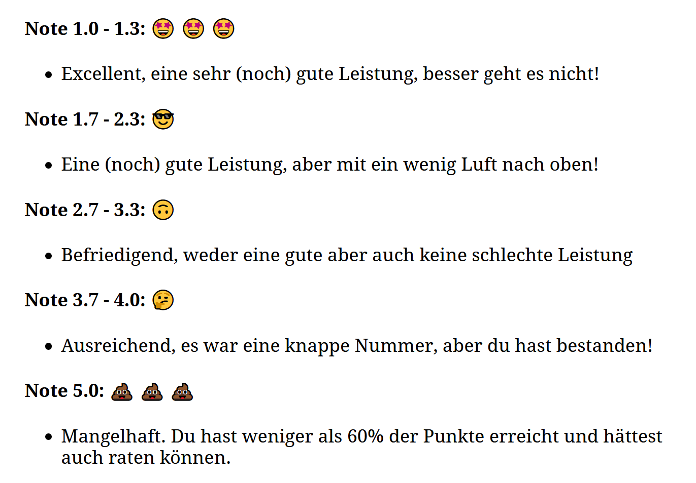
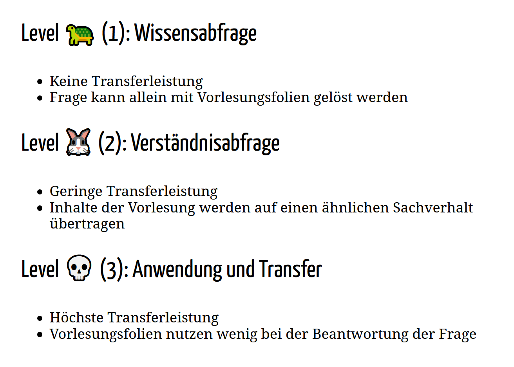
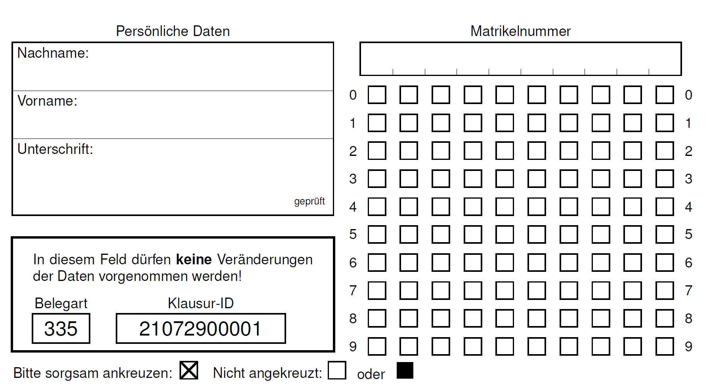
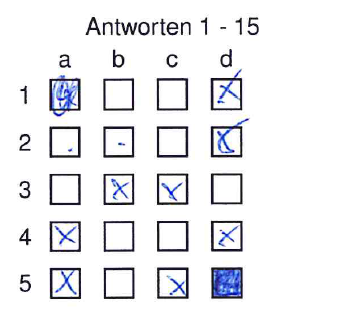
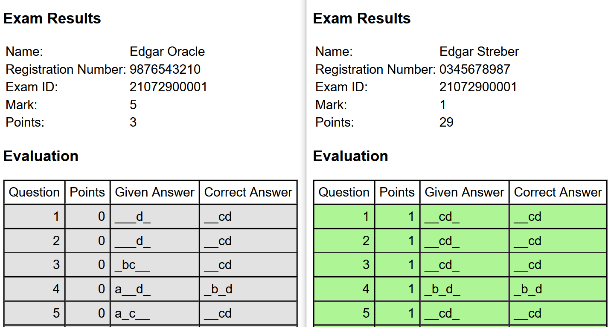

Vorlesung EBF
Sitzung 10: The Quiz
Dr. Edgar Treischl
FAU Nürnberg-Erlangen
Source: Background from pngkey.com
Die Klausur
Das Notenspektrum

The Questions

Der Scanbogen

Ausfüllhinweise

Reliabilität und Validität


Level 1
Was trifft auf die EBF zu?
A.) Ein Ziel der EBF ist die Beschreibung von gesellschaftlichen Verhältnissen.B.) Prognosen sind in der Bildungsforschung aufgrund der Komplexität von Bildungsprozessen nicht umsetzbar.
C.) Das Ziel der Bildungsforschung ist die Erklärung bildungssoziologischer Forschungsgegenstände.
D.) In der EBF können soziale Tatbestände (Kollektivmerkmale) werden nur durch andere soziale Tatbestände (Kollektivmerkmale) erklärt werden.
Welche Aussagen treffen auf Geschlechtereffekte in der EBF zu?
A.) In Deutschland haben sich Bildungsungleichheiten zugunsten von Frauen verschoben. Frauen haben im gesamten Bildungsverlauf die gleichen Chancen.B.) Aus heutiger Sicht hat das Geschlecht der Schülerinnen und Schüler keine Auswirkung mehr auf Bildungserfolg.
C.) Bis weit in die Mitte des 20. Jahrhunderts waren insbesondere Arbeitermädchen vom Lande benachteiligt.
D.) Heute haben Mädchen weltweit teilweise immer noch ungleiche Bildungschancen wie Jungen.
Welche Aussage stimmt bezüglich Raymond Boundon?
A.) Der primäre Effekt der Schichtzugehörigkeit erklärt Unterschiede im Entscheidungsprozess, die sich auf schulische Leistungen auswirken.B.) Die soziale Herkunft von Kindern beeinflusst deren Bildungsentscheidungen, auch unter Konstanthaltung schulischer Leistungen (sekundärer Effekt).
C.) Sekundäre Effekte beziehen sich auf schichtspezifische Unterschiede im kulturellen Hintergrund die sich auf schulische Leistungen auswirken.
D.) Primäre Effekte beziehen sich auf schichtspezifische Unterschiede im kulturellen Hintergrund die sich auf schulische Leistungen auswirken.
Level 2
Eine Studie untersucht, ob die soziale Herkunft eine Auswirkung auf das Erlangen des Abiturs hat. In der Studie lesen Sie, dass akademiker Kinder, im Vergleich zu nicht-akademiker Kinder, einen Odds-Ratio (OR) von 1,7 haben.
Welche Aussagen treffen bezüglich des OR zu?
A.) Die Chance ein Abitur zu erlangen ist für akademiker Kinder im Vergleich zu nicht-akademiker Kinder um den Faktor 1,7 erhöht.B.) Die Chance ein Abitur zu erlangen ist für nicht-akademiker Kinder im Vergleich zu akademiker Kinder um den Faktor 1,7 erniedrigt.
C.) Die Wahrscheinlichkeit ein Abitur zu erlangen ist für akademiker Kinder im Vergleich zu nicht-akademiker Kinder um den Faktor 1,7 erhöht.
D.) Die Wahrscheinlichkeit ein Abitur zu erlangen ist für nicht-akademiker Kinder im Vergleich zu akademiker Kinder um den Faktor 1,7 erniedrigt.
Was versteht man unter dem “Fundamental Problem of Causal Inference”?
Das fundamentale Problem der kausalen Inferenz ... (Single-Choice)
A.) bezieht sich auf die selektive Teilnahme an Umfragen, weshalb die Messung des kausalen Effekts verzerrt sein kann und ein Kausalschluss häufig nicht zulässig ist.B.) verdeutlicht, dass nur individuelle kausale Effekte (Individual Average Treatment Effects) in einem Experiment ermittelt werden können.
C.) verdeutlicht einen kontrafaktischen Zustand: Eine Person kann nicht gleichzeitig ein Treatment bekommen und in der Kontrollgruppe sein.
D.) zeigt, dass Experimente aufgrund ethischer Bedenken (Kinder einem Stimulus aussetzen) in der Bildungsforschung nicht einsetzbar sind.
Level 3
Faktorielle Survey Experimente (FSE) werden zunehmend in der EBF eingesetzt.
Was trifft auf ein FSE zu (Single-Choice)?
A.) In einem FSE werden Probanden zufällig zu Vignetten des FSE zugeordnet, weshalb Drittvariableneffekte ausgeschlossen werden können.B.) In einem FSE werden Probanden zufällig zu einem Universum des FSE zugeordnet, weshalb Drittvariableneffekte ausgeschlossen werden können.
C.) In einem FSE werden Probanden zufällig zu einer Dimensionen des FSE zugeordnet, weshalb Drittvariableneffekte ausgeschlossen werden können.
D.) In einem FSE werden Probanden zufällig zu einem Level des FSE zugeordnet, weshalb Drittvariableneffekte ausgeschlossen werden können.
Remember
An exam, just like a piece of cake ;)!
Well, well, ....
soon 😇 !!